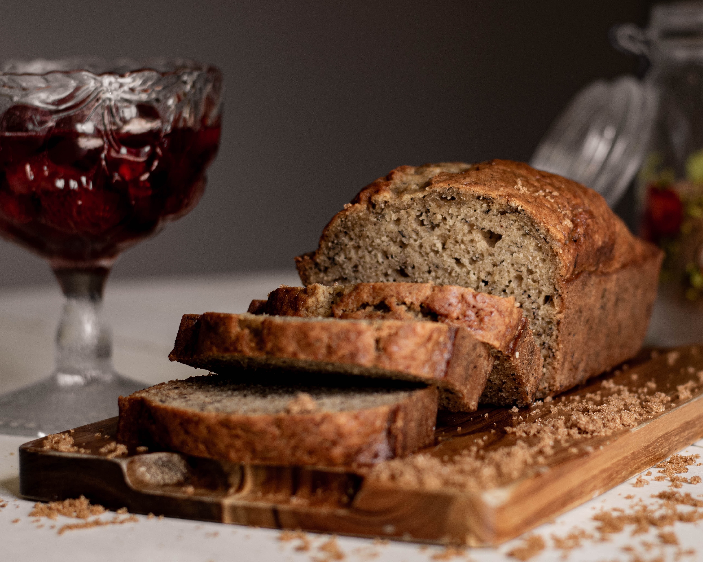

Ingredients
- 1 cup unsalted butter, melted, plus more for buttering the pans
- 6 very ripe large bananas (frozen and thawed work great)
- 1¾ cups (350 grams) granulated sugar
- 4 large eggs
- 2½ cups (315 grams) all-purpose flour
- 1 teaspoon fine sea salt
- 2 teaspoons baking soda
- 1 cup (170 grams) chopped dark chocolate or chocolate chips (optional)
- 1 cup (113 grams) chopped nuts, such as walnuts or pecans (optional)
- Turbinado or other sugar for sprinkling on top (optional)
Steps
- Heat the oven to 350°F. Butter two 9x5-inch loaf pans.
- In a large bowl, mash the bananas with a potato masher.
- Mix in the butter, sugar, and eggs well.
- In a medium bowl, sift (or whisk) together the flour, salt, and baking soda, and add to the banana batter.
- Stir just until the flour mostly disappears. Add the optional chocolate and/or nuts, then stir just until no streaks of flour are visible.
- Pour into the buttered loaf pans (feel free to mix and match pans, but no pan should be more than ⅔ full).
Sprinkle a thin layer of turbinado sugar on top.
- Bake until the top is dry and deep golden brown, and springs back when lightly pressed with a finger in the center.
A toothpick inserted in the center should come out dry or with moist crumbs clinging (and maybe chocolate streaks, but no wet batter), 35 to 45 minutes, or less for shallower pans.
- Let the loaves cool until warm, about 30 minutes, then unmold, or let cool fully in the pan (handy for storage). Store tightly covered at room temperature.